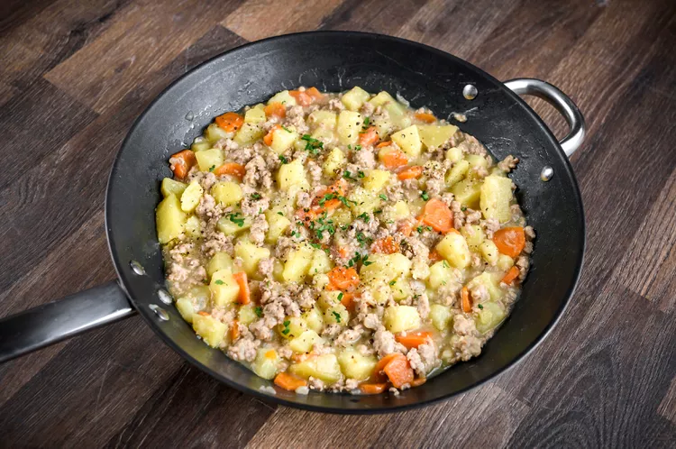

Beef chuck comes from the forequarter. Consisting of parts of the neck, shoulder blade, and upper arm, beef chuck produces tough but very flavorful cuts of meat.
This primal cut has a good deal of connective tissue. That makes chuck a good choice for braised dishes like beef stew or pot roast, both of which tenderize tough cuts. Due to its fat content, beef chuck is also excellent for making ground beef that produces juicy burgers and ground beef stew..
The classic 7-bone roast comes from the beef chuck, as do the increasingly popular flat iron steak and Denver steak.
With conventional butchering, the beef chuck is separated from the rib primal between the fifth and sixth ribs. This means that it also contains a few inches of the longissimus dorsi muscle, which is the same tender muscle that rib-eye steaks are made from.
Simple Ground Beef Stew With Vegetables
Prep: 15 mins
Cook: 35 mins
Total: 50 mins
Servings: 4 servings
Ingredients
- 1 pound ground beef
- 1 medium onion, coarsely chopped
- 1 pound potatoes
- 2 medium carrots
- 3 cups low-sodium or unsalted beef stock
- 4 tablespoons all-purpose flour
- 1/4 cup cold water
- Kosher salt, to taste
- Freshly ground black pepper, to taste
- 1 tablespoon finely chopped parsley, optional
Recipe
- Gather all of the ingredients.
- Place a large Dutch oven or deep skillet over medium-high heat. Add the ground beef and onion to the pan and cook, stirring, until the onion is translucent and the beef is no longer pink.
- Drain off the excess fat and return the pan to the heat.
- Meanwhile, peel the potatoes—or leave the peels on—and cut them into bite-sized pieces.
- Peel the carrots and slice them thinly.
- Add the beef stock to the ground beef mixture along with the potatoes and carrots.
- Cover the pan and reduce the heat to low. Continue to cook for about 20 minutes, or until the vegetables are tender.
- In a cup or small bowl, combine the flour and cold water; whisk or stir until smooth.
- Stir the flour and water mixture into the stew. Increase the heat to medium-low and continue to cook, uncovered, for about 2 to 3 minutes. Taste and add kosher salt and pepper, as needed.
- Garnish the ground beef stew with fresh chopped parsley, if desired.
Tip
- A good and flavorful ground beef lean-to-fat ratio for this dish is 85/15 percent. Be sure to drain off excess fat before you add the stock.